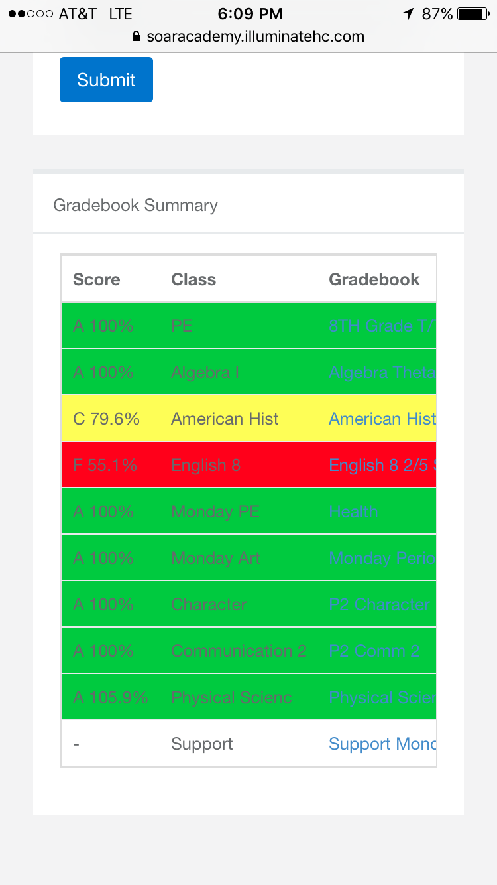
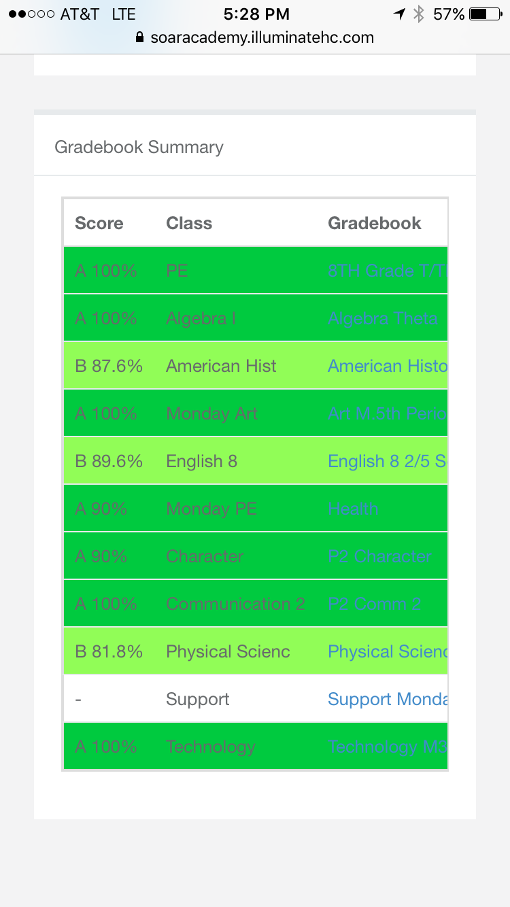
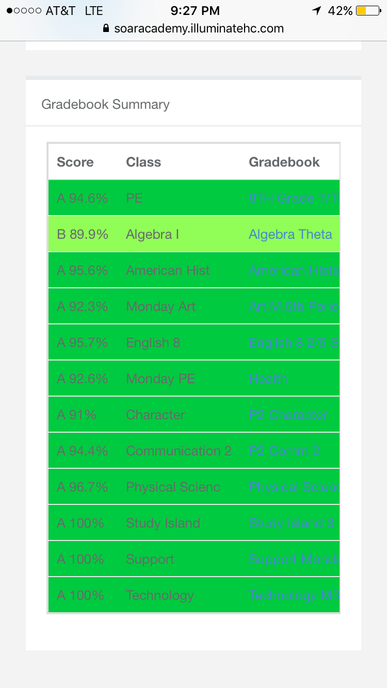

Examples
Of other ways I give full effort
My 2016 Community Service Project at Brookdale Loma Linda
For the Community

Excerpt from my community service paper
How did we grow as community members?
(We discussed this to make this a conjoined paragraph with each of our thoughts) We think that we’ll do this more often, because we like helping at this place, and maybe do community service elsewhere if we agree on a place. If we do this project again, we don’t think we will change anything, it was good the way we did it. Something the reader should know: If you want to do community service then you should do it, excuses like: I don’t have time or other reasons are excuses. There’s always time for 5 hours of your life, even if you don’t like it, just do it.
Thoughts
Before I went to SOAR,
I never wanted to participate in community service projects or give any effort to anything like that.
Thats why when I first came to SOAR, everything was different. My old school
didnt even have periods.
We had the same class, all day.
But now I'm ok with doing these community service projects and doing things that can help the community.
I will always try and
give my best effort to these extra curricular activities.
Me Giving Full Effort at school
At School
Me giving full effort at school
"It's important to give your best effort because you will then achieve more success in life."
That quote was taken from my ESLR Paper. I will always give full effort in school. I used to always get bad grades. I had some F’s, D’s, and C’s. Now I have straight A’s, well almost.



Progress of my grades over the school year.
Now I have straight A’s, well almost. I have a 89.9 percent in Algebra. How could you not consider that a 90?